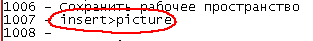
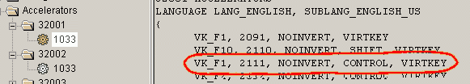
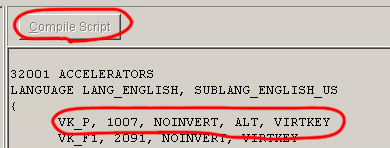
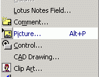

Как сделать свои горячие клавиши в Visio 2000.
Предупреждение: прежде чем что-то делать, создайте копию файлов, которые собираетесь модифицировать.
Для создания собственных "горячих клавиш" нам понадобится следующая программа, Resorce Hacker. C помощью ее нам надо открыть файл "VisRes32.dll". Далее вам необходимо выполнить ряд действий:
1) Выбрать интересующую команду и ее номер из списка DoCMD-команд, используя поиск. Например, команду Insert>Picture.

2) И составить точно такую же команду и записать в конец списка. Например наша команда будет вызываться комбинацией Alt+P.

И соответственно наша команда будет записана так:
VK_P, 1007, NOINVERT, ALT, VIRTKEY и ее следует записать так.

и нажать Compile Script. Далее следует сделать то же самое в "32002">"1033". Сохраняем изменения и открываем Visio.

И наблюдаем плоды нашей работы. И так можно добавлять необходимое кол-во "горячих клавиш".
В начало раздела Следующая статья Автор: Ничков Алексей (a.k.a. Digitall)